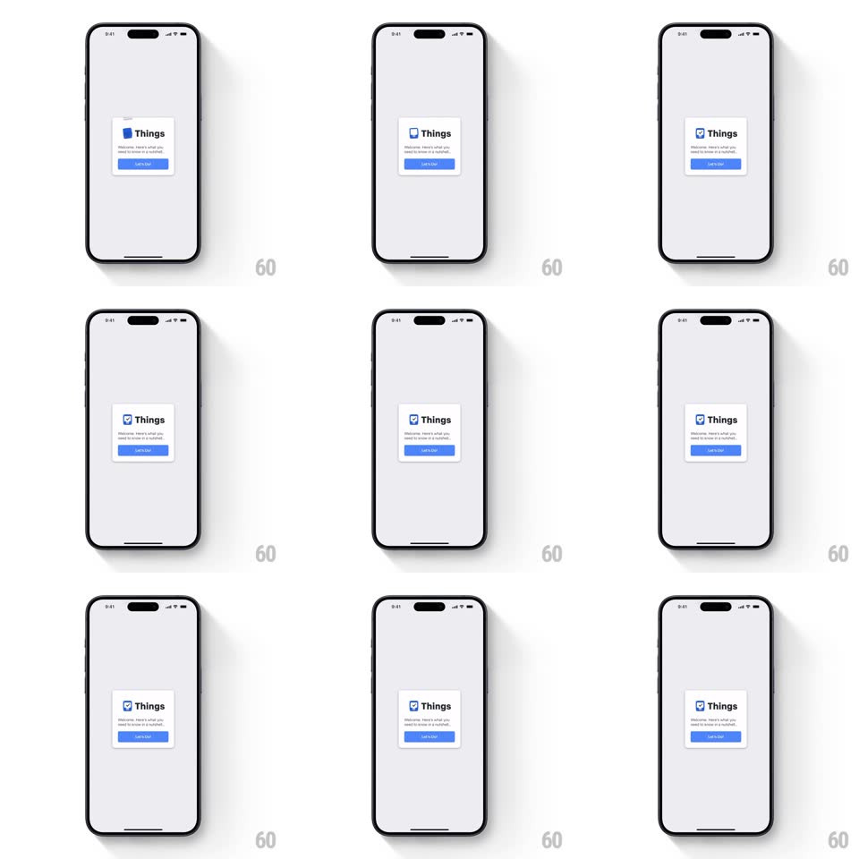

Media
Frame-by-frame

Rebuild this interaction 1:1: Things 3's intro logo animation - on the welcome card, a sheet of paper slides into the blue checkbox and folds into the checkmark, forming the Things icon with a springy settle.

Rebuild this interaction 1:1: Things 3's intro logo animation - on the welcome card, a sheet of paper slides into the blue checkbox and folds into the checkmark, forming the Things icon with a springy settle. ## Integration Integration: stack-agnostic spec - springs given as stiffness/damping, timed motions as duration + curve; map every value to your framework and animation library of choice. ## Scene A light grey screen with a centered white card: the Things logo (blue rounded-square checkbox with a white check), the wordmark "Things", the line "Welcome. Here's what you need to know in a nutshell.", and a blue Continue button. ## Motion spec Pattern: assembling logo mark. - The card fades in and rises slightly (300ms). - The checkbox square pops in empty (scale 0.5 -> 1, spring ~380/18, overshoot). - A small white paper sheet slides in from above-left (translate + slight rotate, 350ms, ease-out) and lands in the box. - The sheet folds/creases into the checkmark: the bottom edge kicks up (rotateX-ish fold, 250ms) and the stroke snaps into the check shape with a spring (~420/20, small overshoot). - The box's blue deepens as the check locks in; a soft shadow settles under the card. - "Things" and the subtitle fade/translate up in sequence (120ms apart), then Continue slides up (spring ~360/22). ## Calibration - The fold is the hero - keep it under 300ms with one clear overshoot. - Everything else stays quiet; the card never moves after entry. ## Reduced motion Logo fades in fully formed; text crossfades. ## Don't miss - The check's short arm points down-left, long arm up-right - the classic Things geometry. - The paper has a faint top edge line before folding, so it reads as a sheet, not a blob.